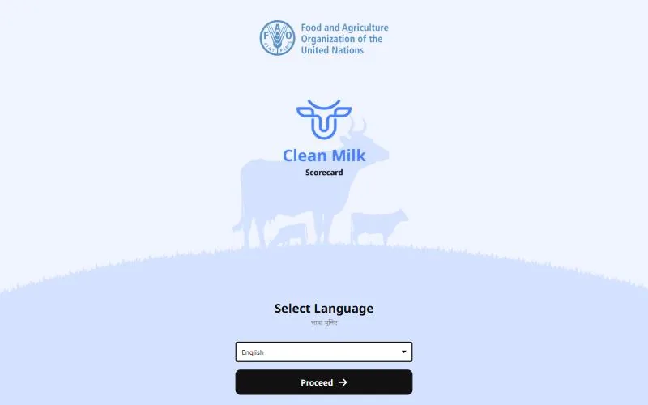
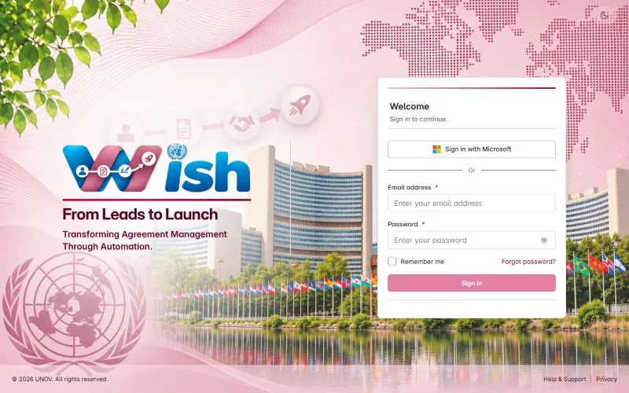
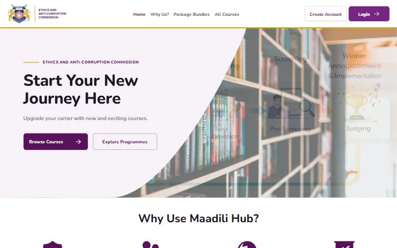

I'm Tushar Chaudhary, a software developer on the ITH-UNOV team of the United Nations, working from the UNDP office in New Delhi. Since June 2025 I've shipped code into 5 production platforms used by UNODC, FAO and UNOV. I write Python and Node.js on the server, with SQL and MongoDB underneath.
Open to junior backend and data roles in Bangalore or remote.
ITH-UNOV team, United Nations · UNDP office, New Delhi
Designed and built the Clean Milk REST API on my own: 50 endpoints, OTP + JWT auth, permission checks and MongoDB analytics for an FAO dairy-hygiene pilot.
Main contributor to WISH, UNOV's lead-to-SLA platform (87 commits). I built leads, proposals, cost estimation, audit logs, permissions and the digital SLA sign-off flow.
Rebuilt the overview and partner pages of the UNODC Transparency Portal from new Figma designs, responsive down to small phones.
Primary frontend developer on SOMA, a learning portal built on Moodle (82 commits): role-based dashboards, attendance, timetables, library and social login.
Smaller contributions to translation and right-to-left support on a multilingual platform, and to the auth flow of an internal project-management app.
B.Tech, Information Technology
2020 – 2024
Krishna Engineering College, Ghaziabad · Dr. A.P.J. Abdul Kalam Technical University
189 commits in the last 12 months
277 since I joined in June 2025, counted from my local git history across 13 repositories. Most of them are private, so little of this shows on my public GitHub graph.
Less
More
Projects
Most of my work code lives in private repositories owned by the organisations I build for. I've linked each product that's public, and I'm happy to walk through the architecture of any of them on a call.
Backend
Clean Milk API
FAO · In pilot · Sole backend developer

This is the backend behind FAO's Clean Milk Scorecard. Field evaluators audit dairy farms on their phones, and admins compare states, districts and milk-collection centres to see where hygiene is improving.
50 endpoints across 9 route modules, documented in Swagger, so the web and mobile apps could integrate without waiting on me.
Phone OTP login that issues JWT access tokens, with refresh tokens hashed at rest and permission checks on admin actions.
Evaluation flow: start, score each category, then submit. Farm photos are resized with Sharp before storage.
Analytics on MongoDB aggregation pipelines: top states, districts and farms, score trends, and baseline vs follow-up comparisons, all paginated.
Resume screening with ML · Backend and ranking module · Public repo
Recruiters upload a stack of CVs, filter a long list, then rank a shortlist against a job description by meaning instead of exact keyword matches.
Long-listing: pdfminer extracts each CV's text, and pandas turns it into a table of experience, degree and skills that recruiters filter and export as CSV.
Short-listing: Sentence-BERT embeds each CV and the JD, KeyBERT pulls key skills, and candidates are ranked by weighted cosine similarity with recruiter-set weights.
Model inference runs in asyncio.to_thread, so one large batch doesn't block other requests. SHA-256 hashing skips files that were already processed.
SQLAlchemy models with Alembic migrations, OTP two-step login, and middleware that logs response times and emails a traceback when an endpoint throws.
Upload CVs. Hash each PDF with SHA-256 and skip it if it was already seen.
Extract. pdfminer, then regex, into a pandas DataFrame.
Filter the long list by experience, degree level and skills, and export it to CSV.
Embed the CVs and the JD with all-MiniLM-L12-v2.
Score with cosine similarity plus KeyBERT skill overlap, multiplied by the recruiter's weights.
Return the sorted shortlist as JSON, with a CSV copy.
UNOV · Soft-launched internally · Frontend and API integration, 87 commits

WISH (Workflow Integration & Strategy Harvesting) tracks a client engagement from the first lead through proposal, cost estimate and SLA to a signed agreement.
Built the leads, proposals, meetings and cost and budgeting modules and wired them to the backend APIs.
Built the estimate builder, audit-log views, permission-gated lists and version history for proposals and SLAs.
Built the document round-trip: uploaded proposal and SLA documents are parsed back into the record, with removed sections detected. Then the digital sign-off with signed-PDF download.
Learning portal on Moodle · Launched, pilot next · Primary frontend developer, 82 commits

A learning and academic portal built on top of Moodle. It covers courses and enrolment, attendance, timetables, grades and certificates, library and fees, with separate views for admins, teachers and students. It's currently live for the Ethics and Anti-Corruption Commission.
Built role-based dashboards for admins, teachers and students, matched to Figma.
Built attendance and timetable views on FullCalendar, plus library, course-pricing and payment screens wired to the API.
Added Google and Facebook login, an inactivity timer that warns before auto-logout, skeleton loading and Moodle redirect handling.
A Django REST API for tracking and recommending anime. It syncs titles from the AniList GraphQL API into PostgreSQL, stores each user's watch history and favourites, and recommends titles scored against the user's favourite genres.
An expense-tracking REST API in Java, with a JWT security filter, JPA entities, request and response DTOs, monthly and per-category summaries, and a global exception handler.
Java, Spring Boot, Spring Security, JPA, MySQL
Code on request
Movie Recommender
A Flask app that suggests films from genre, runtime and mood, with the director, IMDb rating, a short synopsis and the poster.
I like systems you can reason about: a request comes in, gets checked, does one job well and returns something predictable. Most of my time goes into that layer, designing endpoints, modelling data, writing aggregation queries and moving slow work off the request path.
I've also spent plenty of time on the other side of the API. On WISH, SOMA and the UNODC portal I was the one consuming backend endpoints, so I know how much a clear contract and good docs save the person building the UI.
Docs ship with the endpoint. Swagger/OpenAPI specs go up with the code, so web and mobile teams can build in parallel.
Validate at the edge. Joi or Pydantic on every input, one central error handler, one error shape.
Keep the request path fast. ML inference and file processing run off the event loop.
AI as a pair, not autopilot. I use Claude and Cursor every day to scaffold, trace bugs and draft tests. I read and understand every line I ship.
Skills
Listed roughly by how often I use them.
Backend
Python, FastAPI, Node.js, Express, REST API design, JWT and OTP auth, OpenAPIAlso Django, Django REST Framework, Flask, Pydantic. Learning Java and Spring Boot.
Databases
MongoDB and aggregation pipelines, Mongoose, SQLAlso PostgreSQL, SQLAlchemy with Alembic, Django ORM, SQLite, MySQL with JPA.
Data and ML
pandas, Sentence-Transformers, KeyBERTAlso scikit-learn, pdfminer, CSV and Excel exports.